続けてきたから、見えてきたこと
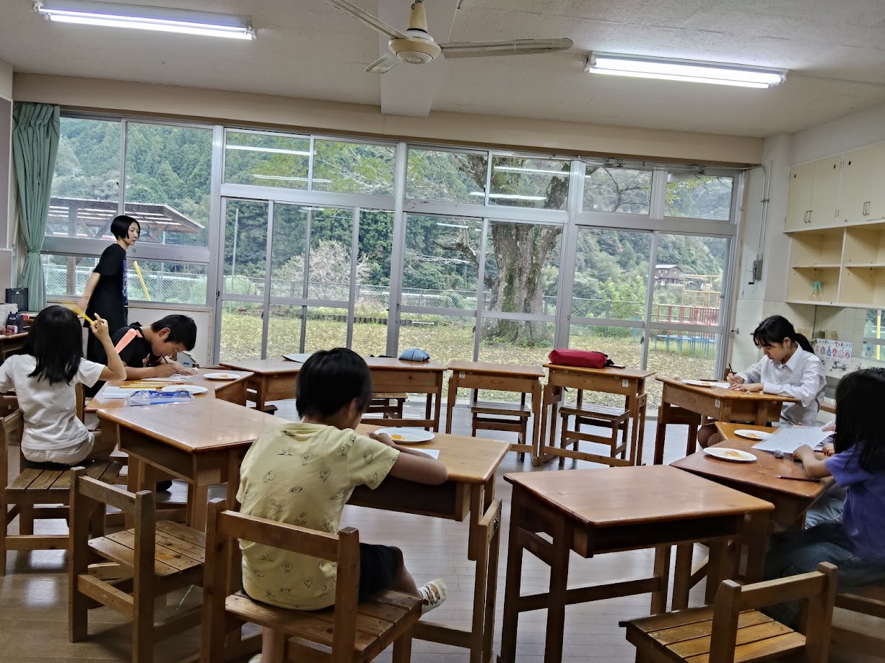
「視える 旧小鳩美術部」、第5回。この日のモチーフは、生卵でした。
M邸には、近くのゲストハウスに泊まる予定の海外からの方も立ち寄ってくださいました。 また、アーツカウンシル高知（公益財団法人高知県文化財団）の方が、見学に来てくださいました。
📸 当日の様子
※ 写真はクリック（タップ）で拡大。長いキャプションも、拡大すると全文が読めます。
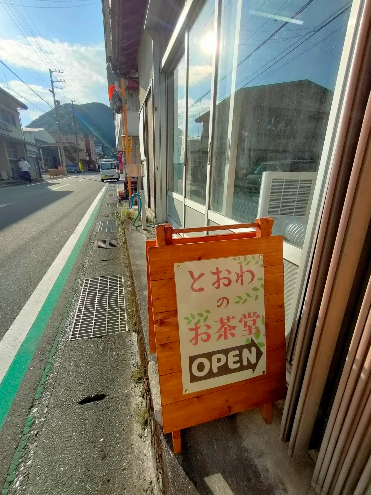
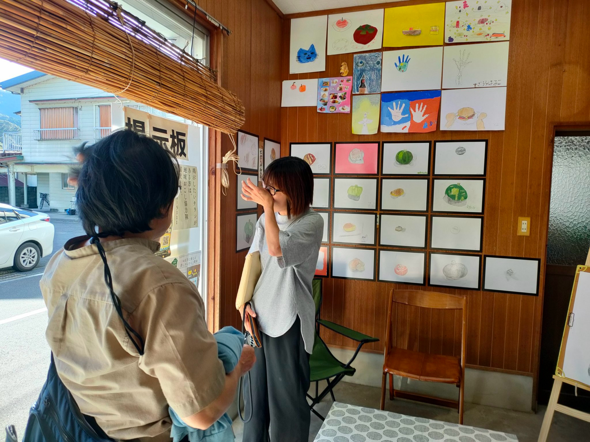
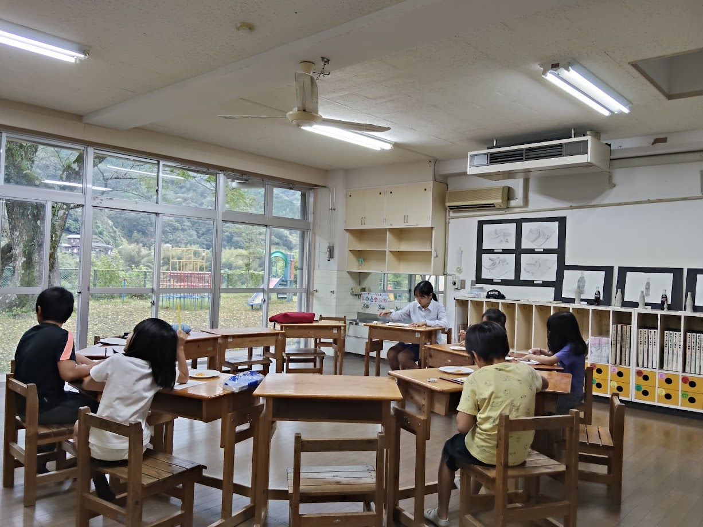
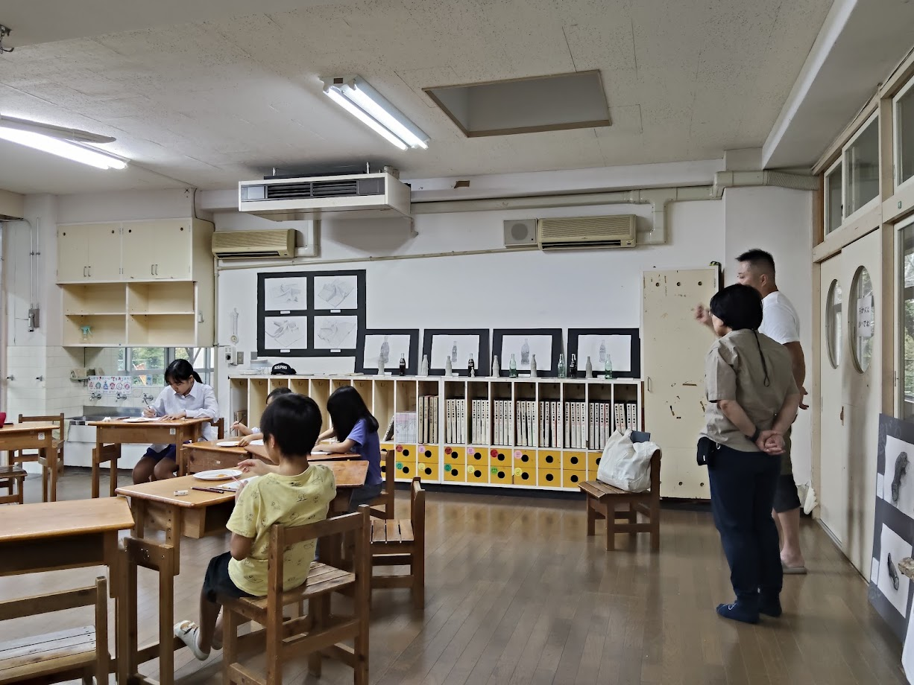
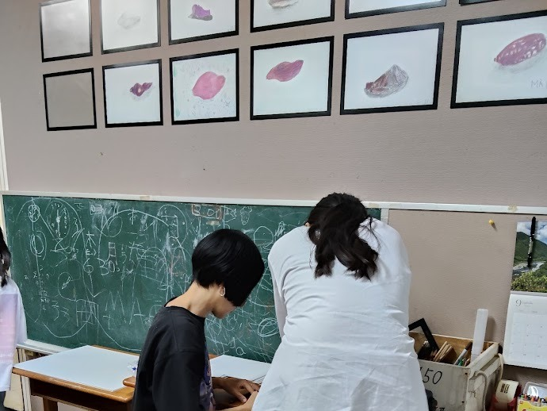
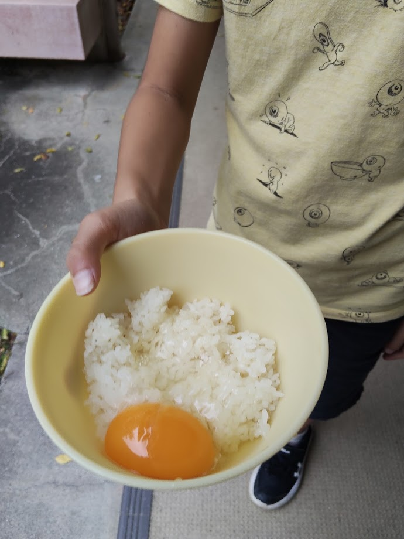
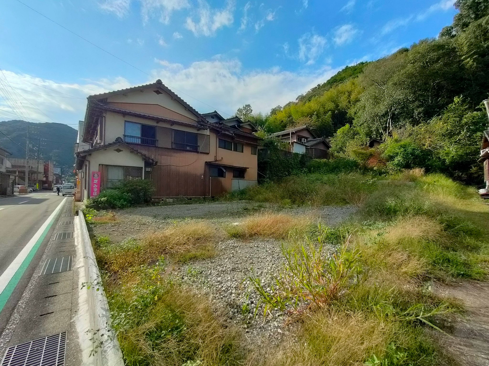
✍️ この日のながれ
午前10時から午後4時まではM邸で作品を展示し、 午後4時からはCUEキュー。（旧小鳩保育所）へ移って制作、という、これまでと同じかたちです。 モチーフは生卵です。
M邸には5名の方が足を運んでくださいました。 近くのゲストハウスに泊まる予定の海外からの方2名が立ち寄り、美術部の作品を見ていかれました。 ChatGPT講座には1名が参加。講座というよりは困りごと相談のような形で、チャットボットの作り方についてお話ししました。 この方も、美術部の作品を見ていかれました。 チラシは、保育所、小学校、中学校、スーパー、お茶堂に、約90枚を配布しています。
🪧 S邸のシャッター
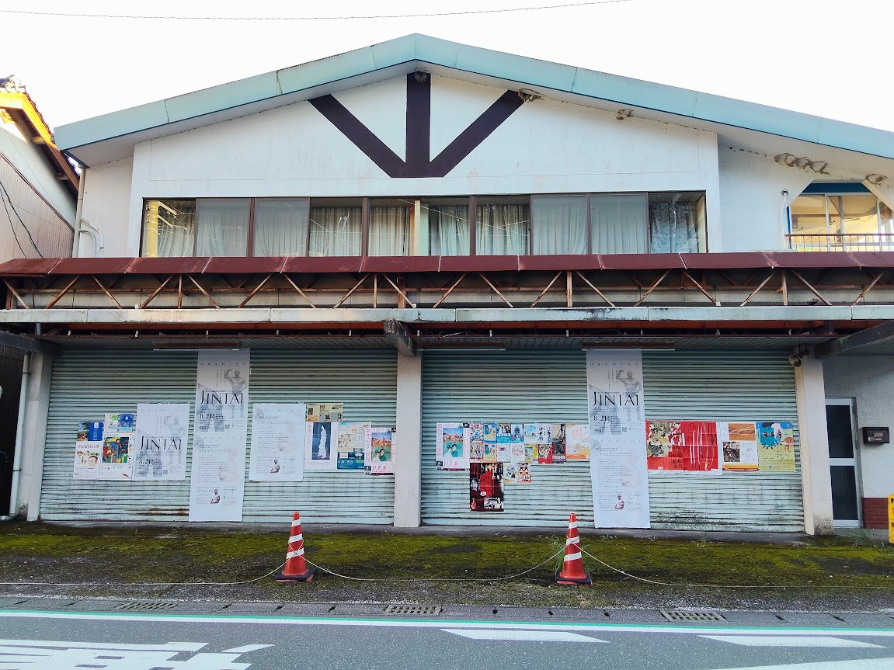
第2回で、会場変更の告知を貼ったことから始まったS邸のシャッター。 第3回では特別授業「JINTAI」のポスターを並べ、第4回からは美術館の展覧会ポスターも貼られるようになりました。
いまは、白黒のJINTAIのポスターのあいだに、色とりどりのポスターが並んでいます。 閉じたシャッターが、少しずつ「まちの掲示板」らしくなってきたように見えます。
🤝 高知県文化財団の見学
この日は、アーツカウンシル高知（公益財団法人高知県文化財団）の方が見学に来てくださいました。 M邸のギャラリーで作品と、この活動とM邸との関わりをお話しし、 S邸のシャッターを見ていただいてから、CUEキュー。の美術室へご案内しました。
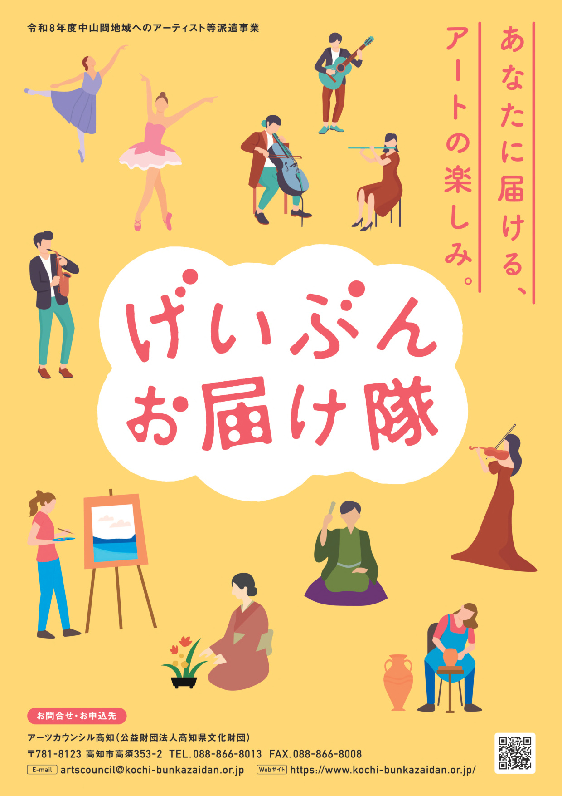
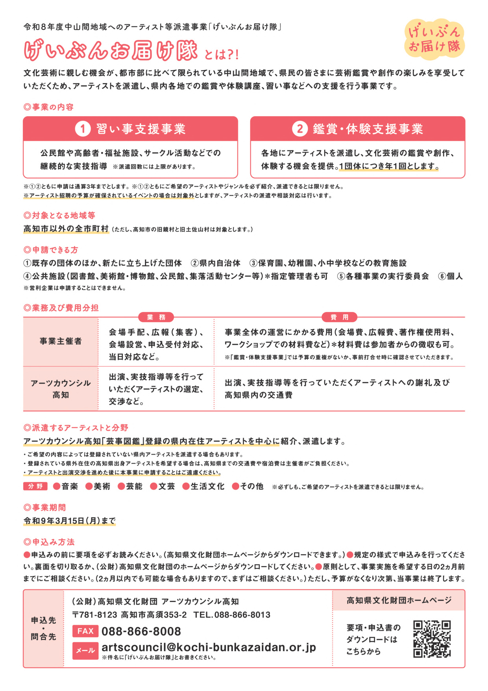
※「げいぶんお届け隊」は、アーツカウンシル高知（高知県文化財団）が紹介している取り組みのひとつ。美術部の取り組みと組み合わせられるよう、工夫したいと考えています。
💭 手応え：外とのつながりと、子どもたちの声
視えるのチラシやS邸のシャッター、 月1回のCUEキュー。の広報紙の1コマ。 そして、週1回のCUEキュー。での美術教室と、 月1回の「視える」の取り組みを、続けて行っています。 こうした取り組みを通して、十和地域で美術の活動が自然と意識されるようになればと願い、地道でも続けていくことが大切だと考えてきました。 そうしたなか、アーツカウンシル高知（高知県文化財団）とつながりが持てたことで、外部の指導者とも連携が取れる可能性が出てきました。 続けてきた活動がなければ、これはなかなか難しかったのではないかと思います。
継続してきた一方で、絵を描くために学校からやってくる子どもたちから「美術部があって本当に良かった」という声が聞かれ、 とても嬉しく思いました。
🧭 いちばんの発見：講師より（生卵を描く）
講師より（その1）
- 生卵・・・モチーフを設定する時に常に考えていることの中に「いろんな質感があるよね〜」ということです。普段の生活の中で目に入るモノには、当たり前のことですが、その全てに「それの質感」があって、しかし、たいがいの人はそれらを気に留めることなく生活しています。
- この「気に留める」ということの大切さを養う方法のひとつが、モチーフとして向き合ってみるということであろうと考えています。
- そのような考えのもと、生活の中でよく目にするモノで、これまで向き合っていない質感のモノを、提供する側としても楽しみながら探しています。
- 生卵は、子どもたちがいつも目にしつつ、その独特の質感に実は気づいているであろうモノです。それから、どういうわけか「なんだか見てて楽しいモチーフ」でもあります。実は前々から考えていたモチーフだったのでした。
講師より（その2）
- 今まで硬いもの、ふわっとしたものを描いてきました。よく見てしつこく描くことが自然にできるようになってきているので、透明で不確かな形で光を写し込みやすい“生卵”もきっと描けると思ってモチーフに決めました。
- 今日は生卵だと知った瞬間悲鳴を上げる子が数名いましたが、集中しだしたら、卵黄のテカリ具合や卵白が実は白くないところや卵白の透明具合など、それぞれが表現したいところに拘りを持って描けていました。
- 卵黄のテカリを表すために色鉛筆では色が薄くてダメで消しゴムでもダメでクレヨンなら表現できると試行錯誤している子もいました。最初から光の部分だけ色を乗せないで見事に表現している子もいました。
- 卵白の透明感を出したくて今までとは違う鉛筆の使い方を色々試している子もいました。
- 卵黄に入る光が少しの目の位置の変化で変わってしまうので描きとめるのが難しいと悩んでいる子がいたので、イーゼルを使用させたらよかったと思い、次回からそうしたいと思いました。
- 卵白が描いている途中動いてしまって形が変わることに困惑してる子もいました。
- 描き終わった後は卵かけご飯にして皆ニコニコして食べていて、食べているときに、ご飯に卵白がかかって薄く膜を被っている状態をどう描くかと聞いてきた子がいて面白かったです。しばしどう描くかお喋りをして、答えは出なかったものの楽しかったです。
🌿 まとめと、次回のこと
いっぽうで、県内、町内では、美術の専科の先生がいないことが常態化していて、それを危惧する声も聞こえてきます。 そうした悩みの相談がここに寄せられるのも、美術部が続いているからこそなのかな、と思います。
M邸の隣の空き家は更地になったものの、管理できるようにはなっておらず、 かなり草が生い茂ってきたり、水が出たりしているそうです。 中山間の過疎地の課題と一緒に、この活動があるのだと思います。
次回は11月18日（水）、またM邸とCUEキュー。で開きます。
🗒 開催のおしらせ（チラシ）
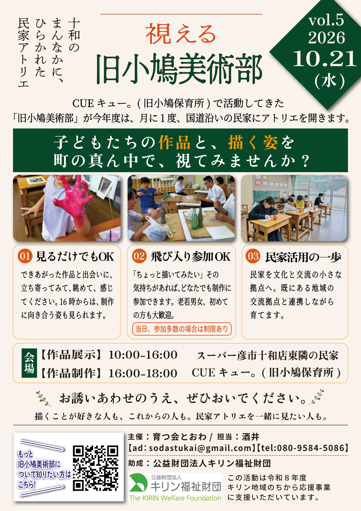